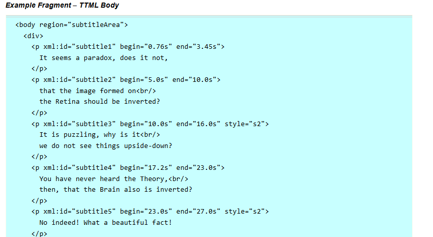
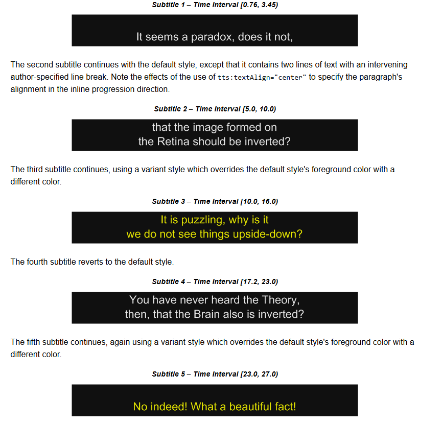
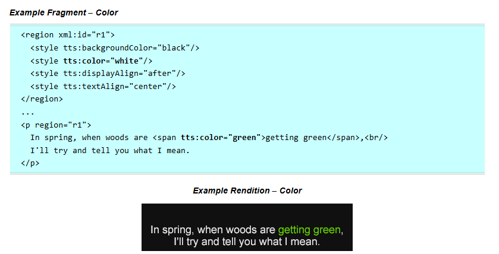

Used for....
TTML is used for video subtitles and captions for videos such as movies, TV shows, YouTube, website videos and etc. There are specific tags that are used with TTML. tt is the timed text element. The body tag is what contains the subtitles and/or captions. The br tag is used for a line break which is also used in HTML. Inside the paragraph tag there is a part that says end and start which is when that specific word or sentence is triggered and apears on the screen.
TTML is used to help videos and content be more accessable. People who are deaf or hard of hearing can use it to experience what is on the screen better. People who speak a different language then the contents language can experience it in their langauge. TTML is an essential web standard that helps many people be able to explore and access more.
With the second reversion of TTML as mentioned earlier, it has been most recently used and accepted by the film industry. Streaming services such as Netflix, Youtube, Amazon Video and many more support using TTML files. TTML is able to be styled like HTML can be. TTML is styled by an in-text format. Below are some examples of TTML code and TTML styling
This is an example of TTML:  
This is an example of TTML styling: 